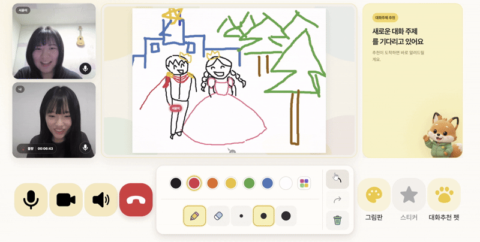
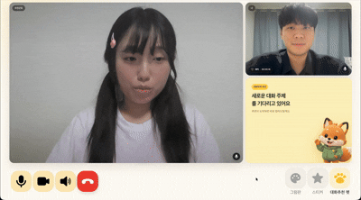
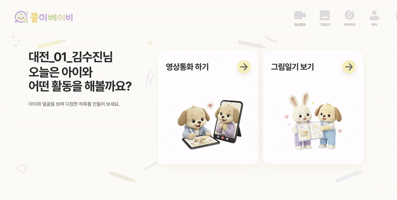

DRAW
같이 그리는 통화
LiveKit 영상통화 중 공동 그림 이벤트를 주고받고, 복구에 필요한 화면 상태는 Redis Snapshot으로 관리합니다.

CASE STUDY · 2026
BACKEND · REALTIME · INFRASTRUCTURE
멀리 있어도, 마음은 늘 가까이
PROJECT STORY
Call Me Baby는 부모와 아이가 영상통화를 하며 그림을 그리고, 대화 속 관심사를 발견해 그림일기로 남기는 서비스입니다.
영상통화 중 생기는 음성·그림·참가자 이벤트가 서로 다른 서버를 거칩니다. 이 흐름을 백엔드에서 연결하고, 여러 서비스를 같은 방식으로 배포·검증할 수 있는 환경을 만들었습니다.
THREE MOMENTS
통화 화면의 실시간 협업부터 관심사 추천, 통화 후 그림일기까지 하나의 경험으로 이어집니다.
LiveKit 영상통화 중 공동 그림 이벤트를 주고받고, 복구에 필요한 화면 상태는 Redis Snapshot으로 관리합니다.

아이의 음성을 STT로 변환하고, 관심사 후보를 부모 화면에 SSE로 전달하는 흐름을 검증했습니다.

통화 후 그림과 대화 맥락을 바탕으로 하루를 기록하는 기능입니다. AI 서비스는 백엔드와 분리해 배포했습니다.

ONE CONVERSATION, MANY BOUNDARIES
영상통화 안에서 나온 음성이 GCP의 STT, Spring Boot, 관심사 AI를 지나 부모 화면으로 돌아옵니다. 각 연결 지점을 나눠 확인했습니다.
실제 통화방 로그에서 Agent 접속부터 발화 전달, 관심사 후보 생성, 부모 SSE 수신까지 확인했습니다.
SYSTEM OVERVIEW
웹 화면은 Vercel, API와 CPU 기반 AI는 EC2, 실시간 음성 인식은 GCP T4에서 실행했습니다. 모델 파일은 Docker 이미지 대신 서버 Volume에 두었습니다.
SELECTIVE DEPLOYMENT
GitLab의 Merge Commit을 기준으로 변경 파일을 확인합니다. Jenkins가 필요한 대상만 빌드해 EC2, GCP 또는 Vercel로 보낸 뒤 Health Check와 알림으로 결과를 확인합니다.
같은 EC2에서도 이미지 태그, 컨테이너, 포트, 볼륨, 도메인을 분리했습니다. develop과 main의 배포 대상이 섞이지 않도록 Jenkins 설정도 환경별로 계산합니다.
WHAT I WORKED ON
팀 전체 기능과 직접 담당한 부분을 구분했습니다. 아래 항목은 구현·구축·검증한 범위를 중심으로 정리했습니다.
통화 상태의 Lock과 TTL, 중복 요청 처리, 참가자 이벤트 동기화, 공동 그림 Snapshot을 구현 상태에 맞게 보완했습니다. 인증·사용자 도메인은 기존 구현을 검토하고 API 계약을 맞췄습니다.
GitLab Webhook부터 선택 배포, Docker 이미지 Push, Compose 배포, Health Check, Mattermost 알림까지 연결했습니다. 프론트엔드는 Jenkins에서 Vercel CLI를 호출했습니다.
Interest AI와 Diary AI는 EC2, Whisper STT와 Agent Manager는 GCP T4에 배포했습니다. 실제 통화에서 STT 결과가 관심사 추천까지 이어지는 흐름을 확인했습니다.
ENVIRONMENT
Jenkins 대기 시간이 아니라 Compose에서 AI URL 환경변수가 컨테이너에 전달되지 않아 Spring 설정 Binding이 실패한 문제였습니다. Repository의 Compose 설정을 수정해 배포 시 같은 값이 전달되도록 했습니다.
CI/CD
Jenkins 컨테이너 안에서 다시 띄운 Node 컨테이너는 Docker Host 기준 경로를 마운트해 소스를 찾지 못했습니다. 실행 경계를 확인하고 배포 경로를 Jenkins 기준으로 정리했습니다.
BROWSER POLICY
CSRF 응답과 Set-Cookie는 정상이어도 서로 다른 최상위 도메인 때문에 브라우저가 Cookie를 저장하지 않았습니다. Dev Frontend를 서비스 하위 도메인으로 연결해 인증 경계를 맞췄습니다.
ONE MEASURED SAMPLE
위 수치는 샘플 WAV 1건의 추론 측정값입니다. 별도의 실제 통화 검증에서는 STT Agent 접속, 발화 전달, 관심사 후보 생성, 부모 SSE 알림까지 연결해 확인했습니다.
CALL ME BABY
실시간 흐름을 작은 경계로 나눠 확인하고, 다시 실행해도 같은 결과가 나오는 배포 구조를 만들었습니다.